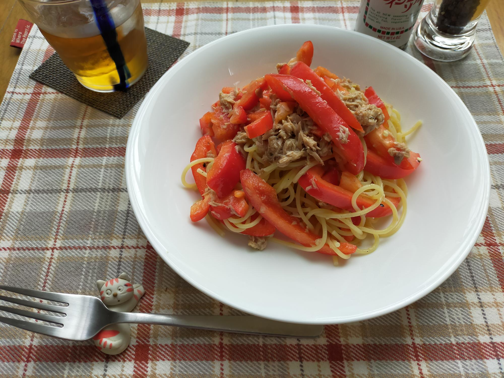

ツナとパプリカの冷製レモンパスタ
材料・金額
| 材料 | 購入金額 | 使用量 | 金額 | kcal |
|---|---|---|---|---|
| パスタ1.6mm（乾）5kg | 1,728 | 70g | 24 | 257 |
| パプリカ2個入 | 250 | 1/4個 | 63 | 21 |
| ツナ油漬け缶8缶入 | 699 | 1缶 | 87 | 160 |
| ★ニンニク（チューブ） | - | 1cm | - | - |
| ★クレイジーソルト | - | 小さじ2/3 | - | - |
| ★ポッカレモン | - | 小さじ2 | - | - |
| ★あらびき胡椒 | - | 少々 | - | - |
| 合計 | - | - | 174 | 438 |
作り方
- 鍋で１L湯を沸かす
- ボウルを用意
- ツナ缶の油をゆるく切って２にいれる
- ★を２にいれる
- 細切りパプリカを２にいれよく和える
- 湯が沸いたらパスタを表示より１分長めにゆでる
- ゆであがったら冷水にとり氷水で冷やす
- 水気を切って、２にいれる
振り返り
１食174円は節約とは言えないかもしれません。１人前パスタの量、70gです。少ないと、思いませんか？私は思います。パスタの量にいつも悩みます。体重を気にしなければ、迷わず100gです。少し気にしていれば80g。これ以下は、かなり勇気がいります。60gにしようか…いやいや足りない。さすがに夜までもたない。65g…もう一声！ということで今回は70gです。